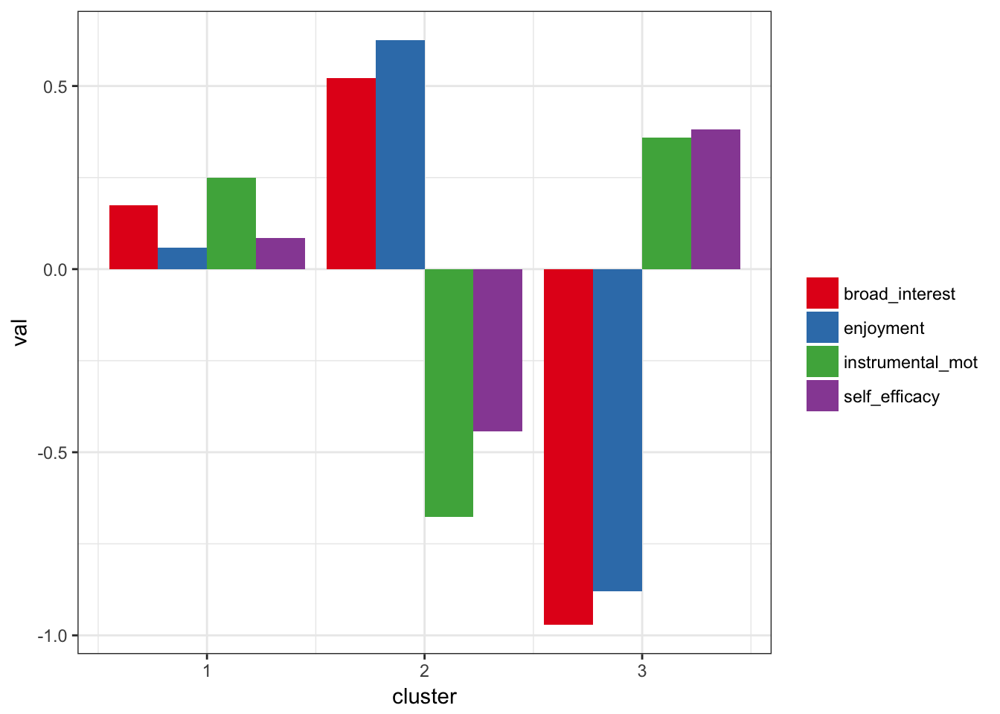

prcr is an R package for person-centered analysis. Person-centered analyses focus on clusters, or profiles, of observations, and their change over time or differences across factors. See Bergman and El-Khouri (1999) for a description of the analytic approach. See Corpus and Wormington (2014) for an example of person-centered analysis in psychology and education.
You can install the development version of prcr (v. 0.2.0) from Github with:
# install.packages("devtools")
devtools::install_github("jrosen48/prcr")This version takes a “data-first” approach different from the object-oriented approach used in the version on CRAN. Because of this, Please note that there presently exists a significant gap in the user interface between the CRAN version available through install.packages("prcr") and the in-development version available through GitHub. This should be addressed shortly in the next CRAN update.
You can install prcr from CRAN (v. 0.1.5) with:
install.packages("prcr")This is a basic example using the built-in dataset pisaUSA15:
library(prcr)df <- pisaUSA15
m3 <- create_profiles_cluster(df, broad_interest, enjoyment, instrumental_mot, self_efficacy, n_profiles = 3)
#> Prepared data: Removed 354 incomplete cases
#> Hierarchical clustering carried out on: 5358 cases
#> K-means algorithm converged: 5 iterations
#> Clustered data: Using a 3 cluster solution
#> Calculated statistics: R-squared = 0.424
plot_profiles(m3, to_center = T)
#> Warning: attributes are not identical across measure variables;
#> they will be dropped
Other functions include those for carrying out comparing r-squared values and perfomring cross-validation. These are documented in both the manual and vignette for the CRAN release and their versions in the in-development version will be documented prior to the CRAN release.
See examples of use of prcr in the vignettes.
Please note that this project is released with a Contributor Code of Conduct available here
This package is being developed along with its sister project, tidyLPA, which makes it easy to carry out Latent Profile Analysis by providing an interface to the MCLUST package. More information about tidyLPA is available here.